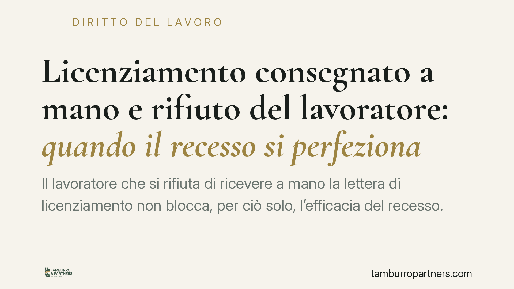

Licenziamento consegnato a mano e rifiuto del lavoratore: quando il recesso si perfeziona
Il lavoratore che si rifiuta di ricevere a mano la lettera di licenziamento non blocca, per ciò solo, l'efficacia del recesso. Un recente orientamento di merito distingue tra rifiuto opposto sul luogo di lavoro in orario e rifiuto fuori contesto. La questione tocca la natura recettizia dell'atto e, soprattutto, l'onere della prova sulle modalità della consegna.

Il caso e la fonte
La questione affrontata è frequente nella pratica: il datore (spesso tramite il capo del personale) tenta di consegnare brevi manu la lettera di licenziamento, ma il lavoratore si rifiuta di prenderla o di firmare per ricevuta. Il recesso è valido?
Un recente orientamento della giurisprudenza di merito avrebbe affermato la distinzione tra rifiuto opposto sul luogo di lavoro durante l'orario e rifiuto opposto fuori orario o in luogo pubblico. Precisazione doverosa: il riferimento che circola (Corte d'Appello di Roma n. 3774/2026) presenta profili di non piena verificabilità, anche per la datazione. Lo trattiamo quindi come orientamento di merito, ancorando il ragionamento ai principi consolidati sugli atti recettizi, che restano il vero fondamento della questione.
Inquadramento normativo
Il licenziamento è un atto unilaterale recettizio: produce effetti quando giunge a conoscenza del destinatario (art. 1334 c.c.). L'art. 1335 c.c. introduce una presunzione di conoscenza per gli atti che giungono all'indirizzo del destinatario; questa norma, tuttavia, è pensata per la ricezione presso l'indirizzo (tipicamente posta o PEC) e non coincide con la consegna a mani proprie, che è ipotesi distinta.
Quando l'atto è consegnato direttamente alla persona, il punto non è la presunzione ex art. 1335 c.c., ma il principio secondo cui il rifiuto ingiustificato di ricevere un atto, da parte di chi ne sia materialmente messo in condizione di prenderne conoscenza, equivale a conoscenza. Il parallelo normativo utile è l'art. 138 c.p.c. in tema di notifica a mani proprie: il rifiuto del destinatario di ricevere la copia equivale a notifica eseguita.
Da qui la ratio dell'orientamento richiamato: se il lavoratore è sul luogo di lavoro durante l'orario, cioè nel contesto in cui è ragionevole attendersi la consegna di comunicazioni aziendali, il rifiuto è irrilevante ai fini del perfezionamento del recesso. Diverso il caso del rifiuto opposto fuori orario o in luogo estraneo al rapporto, dove la pretesa di consegna può non essere esigibile. Attenzione però: questa rigidità tra "luogo e orario" è la motivazione di una pronuncia, non una regola di legge assoluta. La valutazione resta ancorata al caso concreto.
Implicazioni pratiche
Per il datore di lavoro. Il rifiuto del dipendente non è uno scudo automatico. Se la consegna avviene nel contesto lavorativo ordinario, l'atto può considerarsi conosciuto. Il nodo si sposta però sul piano probatorio: chi afferma di aver consegnato (o tentato di consegnare) deve poter dimostrare luogo, orario e modalità del tentativo e del rifiuto. Senza prova, la tesi dell'efficacia resta fragile.
Per il lavoratore. Rifiutare la lettera non sospende i termini né "congela" il licenziamento. Il rischio concreto è lasciar decorrere i termini di decadenza per l'impugnazione nella falsa convinzione che il recesso non si sia perfezionato. È un errore che può costare l'intera tutela.
Sul punto dei termini, ricordiamo la doppia scadenza prevista dall'art. 6 della L. 604/1966, come modificato dalla L. 183/2010:
- 60 giorni dalla ricezione (o conoscenza) del licenziamento per l'impugnazione stragiudiziale, anche con semplice atto scritto;
- 180 giorni dall'impugnazione per il deposito del ricorso giudiziale (o per l'avvio della conciliazione/arbitrato).
Entrambi i termini sono di decadenza: superarli preclude la contestazione, a prescindere dalla fondatezza delle ragioni.
Cosa fare in concreto
- Documenta la consegna (datore). Predisponi un verbale con data, ora, luogo e nominativi dei presenti, facendo sottoscrivere eventuali testimoni in caso di rifiuto.
- Non affidarti solo alla consegna a mani. Integra con raccomandata A/R o PEC all'indirizzo del lavoratore: così attivi anche la presunzione ex art. 1335 c.c. e consolidi la prova.
- Non rifiutare per strategia (lavoratore). Il rifiuto non blocca il recesso e può solo esporti al rischio di perdere la cognizione piena dei termini.
- Calcola subito le scadenze. Annota i 60 giorni per l'impugnazione e i 180 giorni per il ricorso: sono termini perentori.
- Fai valutare l'atto senza indugio. In caso di dubbio sull'avvenuta conoscenza, consigliamo di impugnare comunque in via cautelativa entro i termini, riservando l'eccezione sul perfezionamento.
Il punto
Il messaggio operativo è duplice: il rifiuto non è una tutela per il lavoratore, ma non è nemmeno una scorciatoia sicura per il datore. Entrambe le parti devono spostare l'attenzione dalla scena della consegna alla sua documentazione e al rispetto dei termini di decadenza.
Ogni storia di lavoro ha i suoi tempi.
Se gestisci HR e vuoi un confronto su contenzioso, ispezioni o licenziamenti, scrivi allo studio. Ti rispondiamo entro un giorno lavorativo.